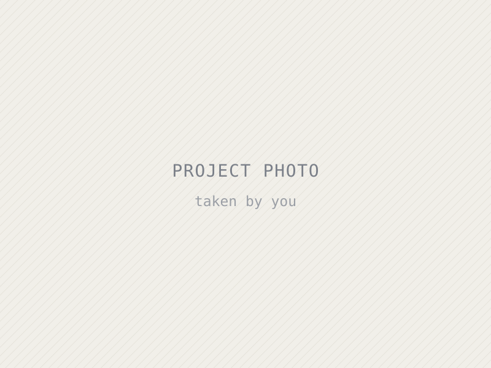
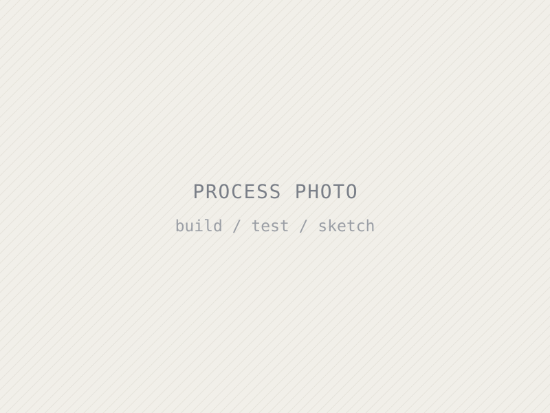

Projects / 0N
Project title
One sentence: what you made and the question it answers.

The problem
What problem or question did you pick, and why does it matter to you? Who has this problem? What did you already know going in, and what didn't you know? (~100 words)
The process
How did you go about it? Research, sketches, first attempt, what broke, what you changed. Name specific tools, parts or methods. This is the longest section. (~150–200 words)

The outcome
What did you end up with? Did it work? Give numbers or concrete evidence if you have them. Be honest about what fell short. (~100 words)
What I learned
What skills did you gain, and how does this connect to the kind of engineer you want to become? What would you do differently, or next? (~75 words)